| テスト理論 |
| テスト理論 |
今、テストが 個の項目からできているとする。 このとき、以下で定義される指標をCronbachのα係数という。
個の項目からできているとする。 このとき、以下で定義される指標をCronbachのα係数という。
| 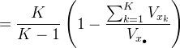 | (56) | |||
 |
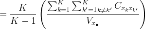 | (57) |
式(57)の( )内の分子は、項目得点の分散共分散行列において、非対角成分を全て足し合わせることを意味する。 つまり、テストに含まれる項目がどれも似た特性を測定しており、お互い相関が高ければα係数の値は大きくなる。
個の項目が本質的にτ等価である場合、
| (58) |
である。
まず、任意の2項目について、真値の差の分散を考える。すると、
| 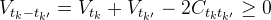 | (59) |
であるから、
| 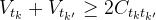 | (60) |
である。 従って、
| 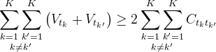 | (61) |
が成り立つ。 これを利用して、
| 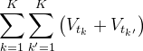 | 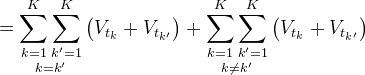 | (62) | ||
|
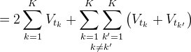 | (63) | ||
|
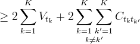 | (64) |
が導かれる。 また、
| 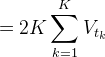 | (65) |
と式(64) より、
| 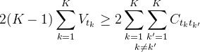 | (66) | ||
| 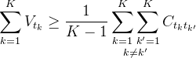 | (67) |
となる。 ここで、テスト得点の真値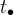の分散を項目得点の分散と共分散に分解し、式(67) を当てはめると、
| 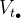 | 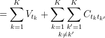 | (68) | ||
|
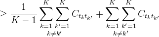 | (69) | ||
|
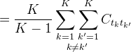 | (70) |
となる。 また、古典的テスト理論の測定モデルにおける基本的性質より
| 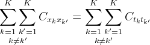 | (71) |
であるから、
| 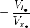 | (72) | |||
|
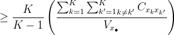 | (73) | ||
|
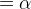 | (74) |
となる。
ここで、個の項目がお互いに本質的にτ等価であれば、式 (59) の等号が成り立つ。 このとき、同時に式 (73) の等号も成り立つ。 一方、本質的にτ等価な測定が満たされていなければ、α係数はテスト得点の信頼性係数の下限値を与える。[証明終わり]
α係数による信頼性係数の推定は、再テスト法よりも弱い仮定の下で可能であり、またテストが複数の項目から成ってさえいれば、ある受験者集団に対する1度の測定で行うことができる。また、測定に関する仮定（本質的にτ等価）が満たされていなくとも、α係数を利用すれば信頼性を過大に高く評価してしまうことはない。 従って、多くのテストの信頼性評価でα係数が用いられている。
Table 6 は、小学校でよく用いられる教研式標準学力検査NRTについて報告されているα係数の値である。
国語 |
社会 |
算数 |
理科 |
|
1年 |
0.945 |
– |
0.945 |
– |
2年 |
0.923 |
– |
0.916 |
– |
3年 |
0.940 |
0.939 |
0.943 |
0.911 |
4年 |
0.930 |
0.917 |
0.941 |
0.878 |
5年 |
0.890 |
0.907 |
0.922 |
0.887 |
6年 |
0.900 |
0.923 |
0.919 |
0.924 |
一方で、α係数は信頼性を過小に評価しすぎるという批判もあり、それに代わる新たな指標も提案されている。
| テスト理論 |